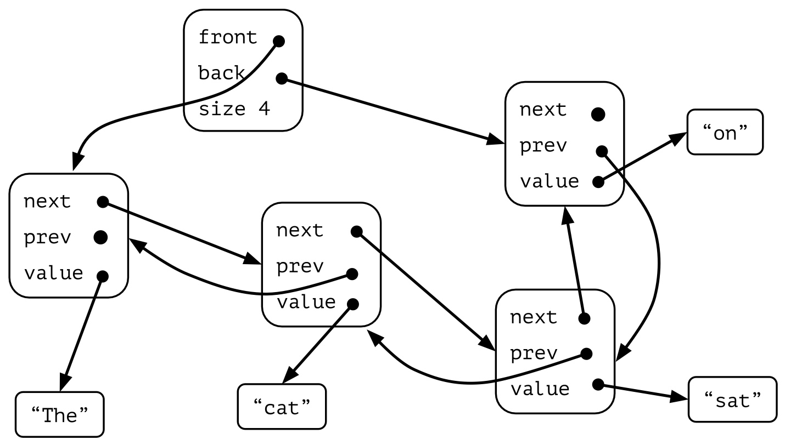

6.8* Other kinds of sequences
Stacks and queues are very simple abstract datatypes, and also very commonly used. Many many algorithms make use of some kind of “agenda”, where they can remember things that have to be taken care of and then process them in the right order, and most of them do not require anything more complicated than a stack or a queue.
But there are algorithms and programs that need sequences with more capabilities. It could be that they order the elements in a more “intelligent” way, or that they need to be able to look at more elements than just the “next in line”. Here we will briefly discuss some common abstract datatypes for more complex sequences.
6.8.1 Priority queues
Stacks and queues can be characterised by how long an element has to wait until it is removed:
- In a stack, the removed object is always the one most recently inserted. Therefore an alternative name for a stack is a LIFO list (where LIFO stands for “last-in-first-out”).
- In a queue, the removed object is always the one who has waited the longest. So the alternative name for a stack is a FIFO list (standing for “first-in-first-out”).
A queue is an “impartial” data structure in the sense that no object gets an “unfair” treatment by to wait much longer than others before they are handled. This is often what ones wants, both in real life and in computer algorithms. But there are also many situations where we wish to choose the “most important” from a collection of people, tasks, or objects. The standard example is a hospital emergency room: there it is vital that patient are not treated in the order they arrived, but instead the “most critical” patients should have priority. When scheduling programs for execution in a multitasking operating system, at any given moment there might be several programs (usually called jobs) ready to run, and some jobs (for example, sensitive operating system tasks) are more important to run quickly than others (for example, backing up your data).
When a collection of objects is organised by importance or priority, we call this a priority queue. This supports the same operations as stacks and queues: adding and removing elements, but the difference is in which order they are removed.
- In a priority queue, the removed object is always the one with the highest priority.
Priority queues are discussed further in Chapter 9.4.
6.8.2 Double-ended queues
A double-ended queue (also known as a deque) is both a stack and a queue at the same time. This means that we can add and remove elements both from the front and the rear (but not in the middle). So a deque should support the folloing operations, efficiently:
addFirst(x)andaddLast(x)removeFirst()andremoveLast()
One simple way to implement a deque is to use a circular dynamic
array, just as the one we used for queues. The main difference with
queues is that the front and rear pointers are now
able to move in both directions. The operation addFirst
will move the front pointer to the left, and
addLast will move the rear pointer to the right.
And the opposite for removeFirst and
removeLast, respectively.
Exercise: Implement a deque using a dynamic array
Implement the class ArrayDeque which uses a circular
dynamic array, together with the operations addFirst,
addLast, removeFirst and
removeLast.
Double-linked lists
However, it is not as easy to implement a deque using a linked list. The solution is to use a double-linked list, where each node points both forward and backward:

Previously we have only talked about single-linked lists. They allow for direct access from a list node only to the next node in the list. A double-linked list allows convenient access from a node both to the next node and the preceding node on the list. This is accomplished by storing two pointers, which we call next and prev (for “previous”).
The most common reason to use a doubly linked list is because it gives an additional possibility to move both forwards and backwards in the list, and to efficiently add and remove elements from both ends.
To add or remove an element, we have to make sure we assign both the next and prev pointers, for the neighbouring nodes. This can be a little tricky, but it is not fundementally difficult. Exactly how to do this is left as an exercise to the interested reader.
Like our linked queue implementation, the doubly linked list makes use of two pointers – one to the first element (the head), and one to the last element (the tail).
Here is an implementation for the class variables and the internal list node class. The only real difference between single linked lists is that we have pointers to the previous node, and a pointer to the tail of the list.
datatype DoubleNode:
value // Value for this node
prev: DoubleNode // Pointer to previous node in list
next: DoubleNode // Pointer to next node in list
datatype DoubleDeque implements Deque:
head = null // Pointer to the DoubleNode front of deque
tail = null // Pointer to the DoubleNode tail of deque
size = 0 // Size of dequeThe main advantage with doubly linked lists are that we can implement more advanced iterators (ListIterator in the Java standard API) that can move forward and backward through a list. In fact, Java’s standard LinkedList is implemented as a doubly linked list.
Adding to a double-linked list
Adding elements becomes a bit trickier, because we have to make sure that all pointers are updated correctly. We have to handle adding to an empty list specially, because then both head and tail will point to the same cell.
addFirst(deque, x):
if deque.size == 0:
deque.head = deque.tail = new DoubleNode(x, null, null)
else:
newhead = new DoubleNode(x, null, deque.head)
deque.head.prev = newhead
deque.head = newhead
deque.size += 1
addLast(deque, x):
if deque.size == 0:
deque.head = deque.tail = new DoubleNode(x, null, null)
else:
newtail = new DoubleNode(x, deque.tail, null)
deque.tail.next = newtail
deque.tail = newtail
deque.size += 1Removing from a double-linked list
The same goes for removing elements – the one-element list is a special case.
removeFirst(deque):
removed = deque.head // Remember the current head
deque.head = removed.next // Re-point the head to the second node
deque.head.prev = null // Make sure the new head doesn't have any predecessor
deque.size -= 1
return removed.elem
removeLast(deque):
removed = deque.tail // Remember the current tail
deque.tail = removed.prev // Re-point the tail to the predecessor node
deque.tail.next = null // Make sure the new tail doesn't have any successor
deque.size -= 1
return removed.elem6.8.3 General lists
Stacks and queues (and deques) are special cases of a more general
abstract data type, the list. In a general list you can access
any element by its position in the list, you can replace elements, and
you can insert and remove elements. Python lists are one example, and
the ArrayList in Java is another.
What basic operations do we want our lists to support? Our common intuition about lists tells us that a list should be able to grow and shrink in size as we insert and remove elements. We should be able to insert and remove elements from anywhere in the list. We should be able to gain access to any element’s value, either to read it or to change it. Finally, we should be able to know the size of the list, and to iterate through the elements in the list – that is, the list should be a Collection.
One interesting thing with lists is that it is impossible (or at least very difficult) to make them efficient for all possible operations – looking up, inserting and removing at any position in the list. You can make them efficient for one kind of operation (for example, accessing by position), but then other operations will be slower (for example, inserting in the middle).
The most common implementation of a general list is a dynamic array,
and that is how both Python lists and the Java ArrayList do
it. For both of them it is inefficient to insert and remove elements at
the beginning.
ADT for general lists
Now we can define the ADT for a list object in terms of a set of
operations on that object. We will use an interface to formally define
the list ADT. List defines the member functions that any
list implementation inheriting from it must support, along with their
parameters and return types.
True to the notion of an ADT, an interface does not specify how operations are implemented. Two complete implementations are presented later (array-based lists and linked lists), both of which use the same list ADT to define their operations. But they are considerably different in approaches and in their space/time tradeoffs.
The code below presents our list ADT. The comments given with each member function describe what it is intended to do. However, an explanation of the basic design should help make this clearer. There are four main operations we want to support:
interface List extends Collection:
add(i, x) // Adds (inserts) x at position i; where 0 <= i <= size, increasing the size.
get(i) // Returns the element at position i; where 0 <= i < size.
set(i, x) // Sets the value at position i to x; where 0 <= i < size.
remove(i) // Removes the element at position i; where 0 <= i < size, decreasing the size.Apart from these four, we also want to know the number of elements, to be able to loop through the list elements in order. So we make the List interface be a Collection too.
Insertion into a general list, overview.
The List member functions allow you to build a list with
elements in any desired order, and to access any desired position in the
list.
The list class declaration presented here is just one of many
possible interpretations for lists. Our list interface provides most of
the operations that one naturally expects to perform on lists and serves
to illustrate the issues relevant to implementing the list data
structure. As an example of using the list ADT, here is a function to
return true if there is an occurrence of a given element in
the list, and false otherwise. The find
operation needs no knowledge about the specific list implementation,
just the list ADT.
// Return true if key is in list, false otherwise.
find(list, key):
for each elem in list:
if key == elem:
return true // Found key
return false // key not foundThere are two standard approaches to implementing lists, the array-based list, and the linked list.
6.8.4 Implementing general lists using linked lists
We can use the same structure as for stacks when implementing general linked lists:
datatype LinkedList implements List:
head = null // Pointer to list header node
size = 0 // Size of list
Iterating through a linked list.
Adding and removing nodes
However, if we want to add or remove nodes, there is a problem with
using a pointer to the current node.
The problem with using a pointer to the current
node.
current
node.So, using a current pointer, it is possible to add and
remove nodes, using some complicated coding. But this does not work for
the very last node! There are several possible ways to deal with this
problem. One is to always have an empty node (a “dummy node”) at the
very end of the list, but this will increase memory usage.
Another simple solution is to have a pointer to the node before the current node. This is the solution we will adopt.
Adding a node
How to insert an element using a pointer to the node before
the current node.
Here are some special cases for linked list insertion: Inserting at
the beginning of a list, and appending at the end.
Here’s the code for addition.
add(list, i, x): // Add x to list at position i
if i == 0:
list.head = new Node(x, list.head)
else:
previous = list.head
repeat i-1 times:
previous = previous.next
previous.next = new Node(x, previous.next)
list.size += 1
Here’s an exercise for adding a value to a linked list.
Removing a node
How to delete from a linked list.
Here’s the code for deletion:
remove(list, i): // Remove the element at position i from list
if i == 0:
removed = list.head
list.head = removed.next
else:
previous = list.head
repeat i-1 times:
previous = previous.next
removed = previous.next
previous.next = removed.next
removed.next = null // For garbage collection
list.size -= 1
return removed.value
And here’s an exercise.
Complexity analysis
Locating a certain position i in the list requires i steps. The worst case is if we want to go to the last node, so the time complexity for above all operations is O(n).
This is much worse than the array-based list (see below), where these operations are O(1). So are linked lists totally useless? No! But they don’t work well with our current List interface.
To make linked lists useful, we need an enhanced iterator interface, where we can move forwards and backwards in the list, and add/remove nodes through this enhanced iterator. In the standard Java API, this kind of iterator is called a ListIterator, which is part of Java’s standard LinkedList.
6.8.5 Implementing general lists using arrays
First we give a static implementation for array-based lists, named ArrayList.
Unlike normal arrays, lists can change in size: we can add elements to and remove from them. How can this be implemented? Well, what we don’t want to do is to create a completely new array every time elements are added or removed. So instead we will use an underlying array which is larger than we need.
Because of that will need two internal variables: the underlying array, and a size counter telling how much of the array is actually used. When we create a new array-list we have to decide the capacity, the largest possible size. Then the underlying array is initialised, and the size counter is set to 0 because there are no elements yet.
The internals of an array-based list.
datatype ArrayList implements List:
arr = new Array(capacity) // Internal array containing the list elements
size = 0 // Size of listNote: in Python you cannot create an array with a certain
capacity. You can simulate it by creating a list with a number of empty
elements: [None] * capacity, but this is not a real
fixed-size array as explained just above.
Getting and setting values
Random access to any element in the list is quick and easy.
Finding a value by its position.
As you can see below, there are no loops in the operations
get and set, which means that both require
O(1) time.
get(list, i): // Get the value at position i
return list.arr[i]
set(list, i, x): // Set the value at position i to x
list.arr[i] = xAdding elements
Because the array-based list implementation is defined to store list
elements in contiguous cells of the array, the add and
remove operations must maintain this property.
Appending elements at the tail of an array-based list is super-fast.
Appending to the end of an array-based list.
However, adding an element at the head of the list requires shifting all existing elements in the array by one position toward the tail.
Inserting at the head of the list.
Therefore, if we want to add an element at position i, then n - i - 1 elements must shift toward the tail to leave room for the new element. In the worst case, adding elements requires moving all n elements, which is O(n).
add(list, i, x): // Add x to list at position i
list.size += 1
for k in list.size-1, list.size-2 .. i+1:
list.arr[k] = list.arr[k-1]
list.arr[i] = xPractice exercise
Practice exercise about inserting into an array-based list.
Removing elements
Removing an element from the head of the list is similar to adding in the sense that all remaining elements must shift. But now we have to shift toward the head to fill in the gap, instead of toward the tail. If we want to remove the element at position i, then n - i - 1 elements must shift toward the head, as shown in the following slideshow.
Removing an element at a certain position in the list.
In the worst case, insertion or removal each requires moving all n elements, which is O(n).
remove(list, i): // Remove the element at position i from list
x = list.arr[i]
for k in i+1 .. list.size-1:
list.arr[k-1] = list.arr[k]
list.size -= 1
list.arr[list.size] = null // For garbage collection
return xPractice exercise
Practise exercise about removing from an array-based list.
6.8.6 When to use linked lists?
According to the calculations above, linked lists are worse than array-based lists, because all operations are slow (linear time). So why even bother using linked lists?
First there are limited versions of lists that can be implemented efficiently using linked lists, we will look at [stacks] and [queues] later.
Second, our list API is not the best for linked lists. If we instead could have a pointer to the “current” list node, and have methods for moving forward and backward in the list, several of the operations can be constant time. In the Java standard API this is called a ListIterator, which is part of Java’s standard LinkedList.
But these advanced list iterators are not part of this course, and in fact there are not many algorithms where list iterators are particularly useful.
6.8.7 How are lists implemented in the standard libraries?
All serious languages have dynamic list implementations. Here are how they are implemented in Java and Python:
- In Java, java.util.ArrayList implements dynamic arrays, meaning that the internal array grows automatically when necessary. The growth factor is 50%, so that if the array has size 1024, it will grow with another 512 elements. [Source: ArrayList.java] However, the ArrayList will never shrink automatically, but instead it’s up to the programmer to decide when to shrink it.
- Java’s java.util.LinkedList implements doubly-linked list (Section 6.8.2), so that the iterator can move forward and backward through the list. [Source: LinkedList.java]
- Python’s standard lists are dynamic. In fact, Python doesn’t even support fixed-length lists, so our code in this chapter is a bit of a hack. Python lists both grow and shrink the lists automatically, and the growth factor is 1/8 (12.5%), meaning that if the array has size 1024, it will grow with another 128 elements. It shrinks the array by 1/8 whenever less than half of the array is occupied. [Source: listobject.c]